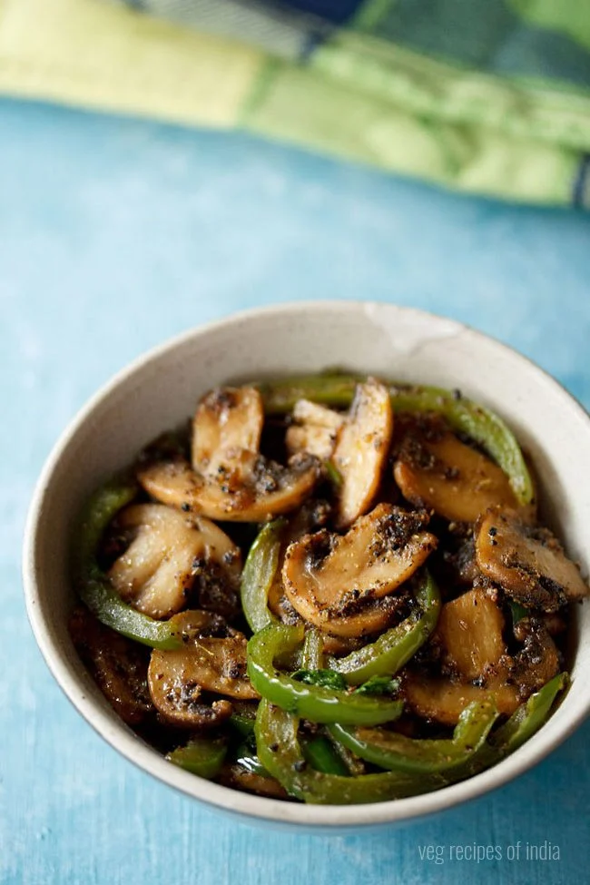

Mushroom Pepper Fry

This preparation is super easy and simple, and makes for a fantastic spicy mushroom and capsicum fry. Rest of the
ingredients too are all the basic ones, which are usually available at any Indian home kitchen. Since I have
cooked it in coconut oil and it also has curry leaves, I refer to it as a South Indian style preparation. The
recipe is vegan and gluten free too.
INGREDIENTS
- Mushrooms
- Coconut oil
- Onions
- Ginger-garlic paste
- Green capsicum
- Black peppercorns and Fennel seeds
Steps
- Firstly, take 1 tablespoon black peppercorns and 1 teaspoon fennel seeds in a dry grinder or coffee grinder.
If you are not going to add capsicum in the recipe, then reduce the black pepper to ½ tablespoon and fennel
seeds to ½ teaspoon.
- Grind to a coarse powder. Keep aside. Also, slice 1 large onion, 250 grams white button mushrooms, 1 medium
to large capsicum and 1 green chili.
Rinse the mushrooms a few times in water using a colander or strainer before you chop them.
- Grind to a coarse powder. Keep aside. Also, slice 1 large onion, 250 grams white button mushrooms, 1 medium
to large capsicum and 1 green chili.
Rinse the mushrooms a few times in water using a colander or strainer before you chop them.
- Then, add 1 cup thinly sliced onions.
- Mix the onions very well and sauté on low to medium heat.
- For quick cooking of the onions, you can add a pinch of salt while sautéing. Sauté till they start to turn
light golden.Then, add ½ teaspoon ginger-garlic paste.
- Stir and sauté till the raw aroma of ginger-garlic goes away.
- Now, add the sliced mushrooms.
- Mix very well and sauté on medium heat.First, the mushrooms will release a lot of water. Continue to sauté
till all the water has evaporated.
- Then, add 1 cup thinly sliced green capsicum. Mix well.Sauté the capsicum slices till they are half cooked.
They should have some crunch in them.
- Then, add sliced green chili and 2 teaspoons chopped curry leaves. Mix well.Next, add the prepared spice
powder.
- Next, add ½ teaspoon coriander powder, ½ teaspoon cumin powder and a pinch of turmeric powder.Mix all the
spice powders very well. Season with salt.
- Mix again and switch off the heat. Check the taste and add more, salt if required. Add 2 tablespoons chopped
coriander leaves. Stir.
- Serve Mushroom Pepper Fry hot with chapati or roti.